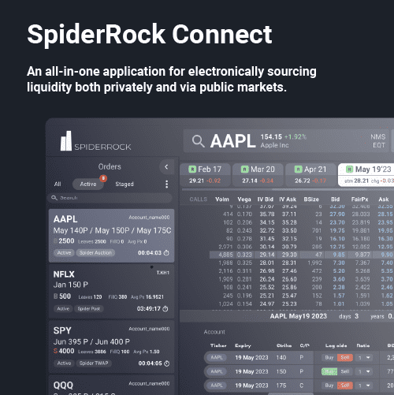

SpiderRock delivers cloud-based trading technology, institutional brokerage, and options data & analytics so professional market participants can trade, model, and manage risk on a consistent foundation.
Multi-tenant | High Performance | Derivatives For Global Institutional Clients
SpiderRock is a technology provider that creates and deploys advanced algorithmic execution, risk management, and data analytics solutions for volatility funds, hedge funds, bank trading desks, and proprietary trading firms worldwide.
Our high-performance, cloud-based platform empowers institutional clients to construct, execute, and scale equity, futures, and options strategies, while our brokerage and data businesses provide the market access and information needed to support those workflows end to end.
Daily Trading Volume
Institutional Clients
Improved Prices
Cloud-based multi-asset execution
SpiderRock's trading platform is a high-performance, cloud-based system for building and managing equity, futures, and options strategies. It's an integrated platform designed for institutional workflows at scale.

FINRA-regulated market access
Through SpiderRock EXS, a FINRA-regulated broker-dealer and NFA member, we provide electronic execution and market access services for institutional clients.
Institutional-grade market data
SpiderRock Data & Analytics delivers exchange-licensed U.S. equity options and futures data plus proprietary options analytics for research and production trading.
Join institutional traders who trust SpiderRock for their derivatives operations.
Get in Touch